Malaria Detection
Using Deep Learning
Each image is a single Giemsa-stained red blood cell, pre-segmented by the NIH, labeled Parasitized (dark ring-form Plasmodium inclusion) or Uninfected.
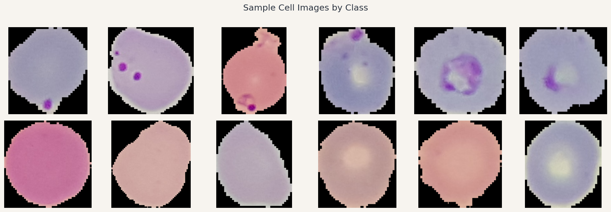
| Model | % Infected detected | Missed / 1,300 | Accuracy | AUC | ms / image | RAM (MB) |
|---|---|---|---|---|---|---|
| Loading… | ||||||
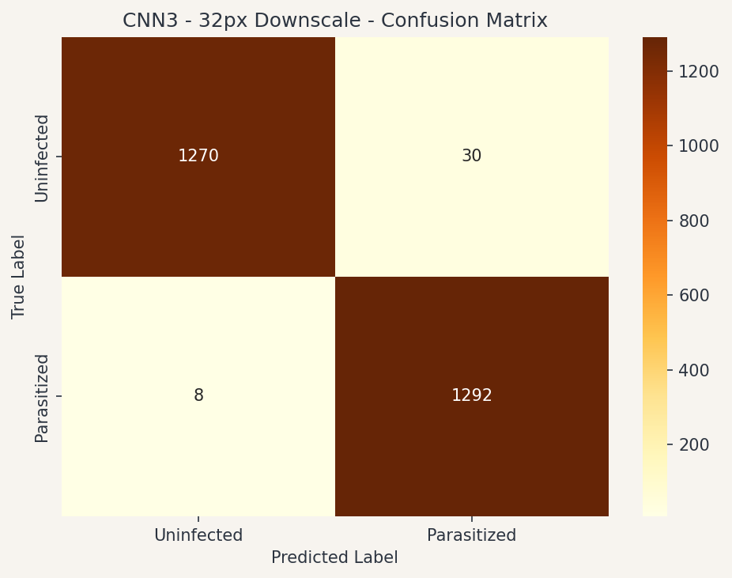
The model is compact, high-recall, and deployable on standard hardware. The next required step is a controlled pilot study at a partner lab to confirm that - recall holds under real-world staining and imaging conditions, and to establish the operational workflow for borderline-case referral.
A 6-month pilot at two sites would provide the evidence base to support a scale decision. The primary question is operational fit: whether the borderline-case referral workflow integrates cleanly into existing laboratory practice.
Budget figures are author estimates, incremental to baseline staffing costs. No published benchmark.
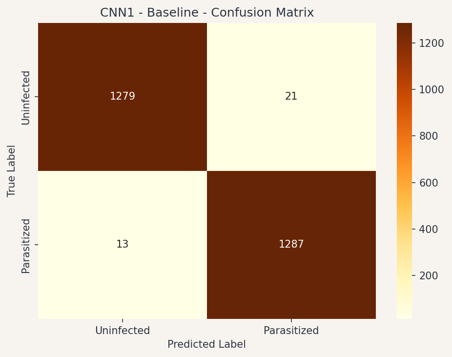
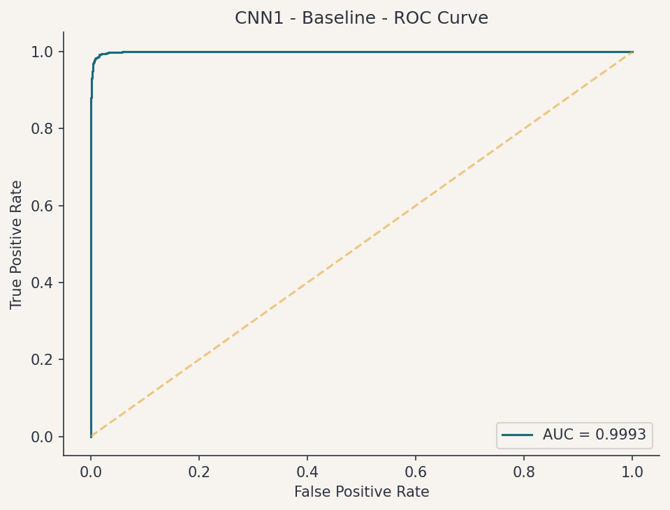
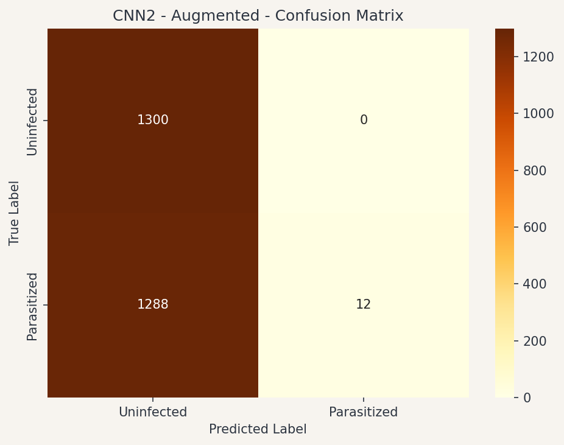
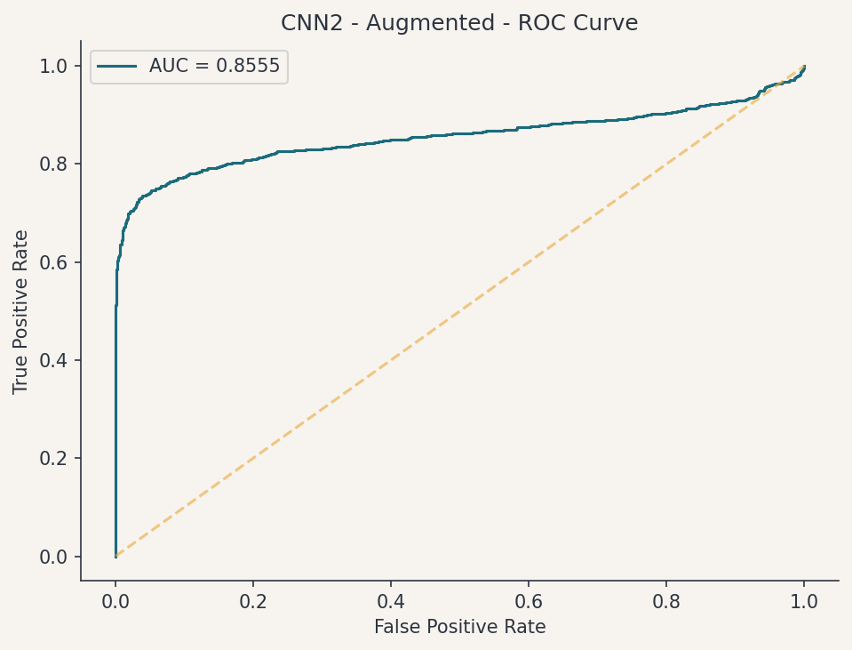
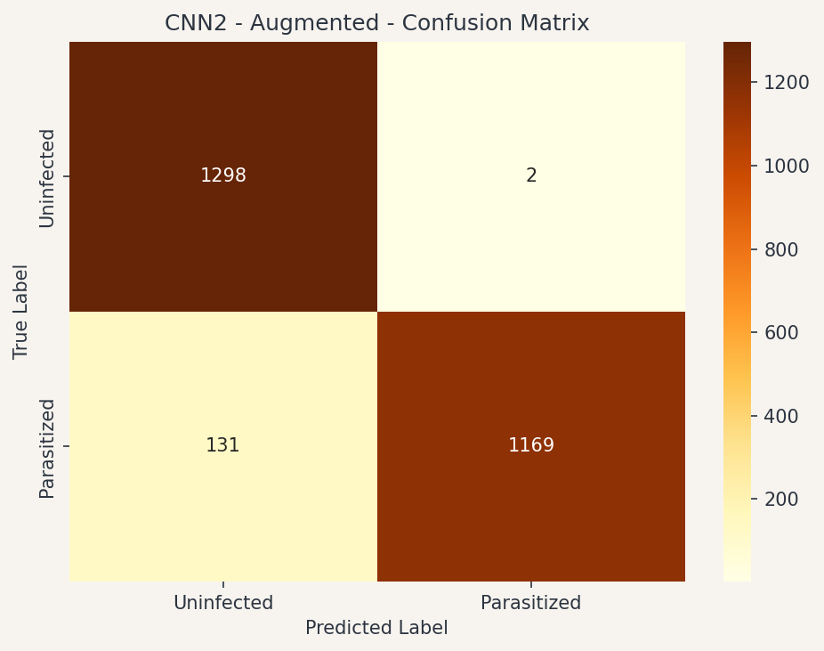
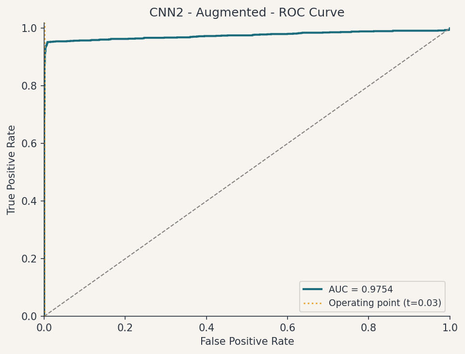
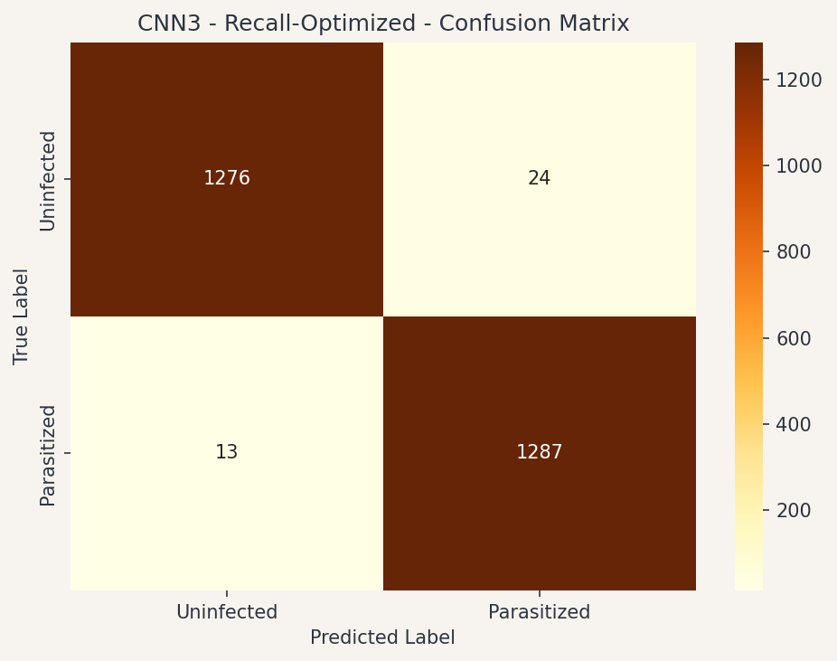
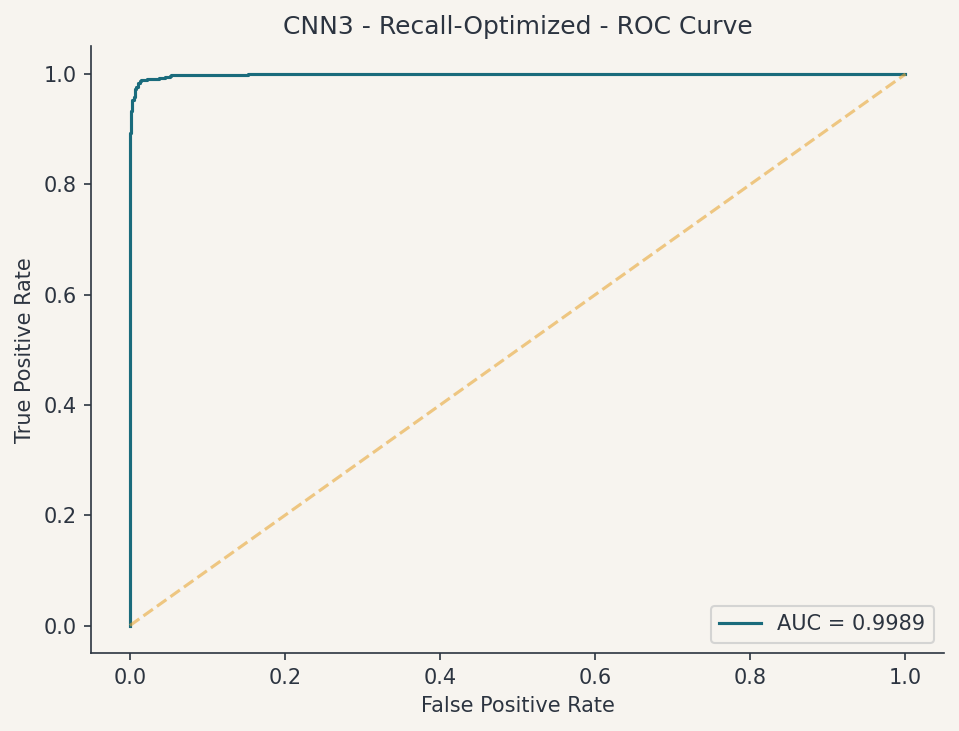
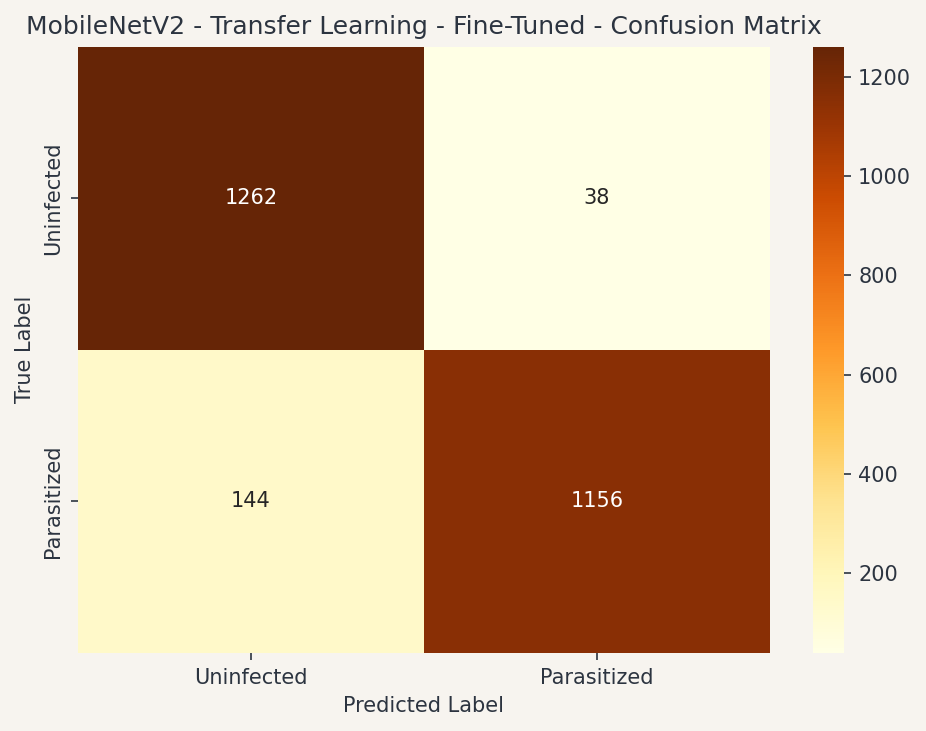
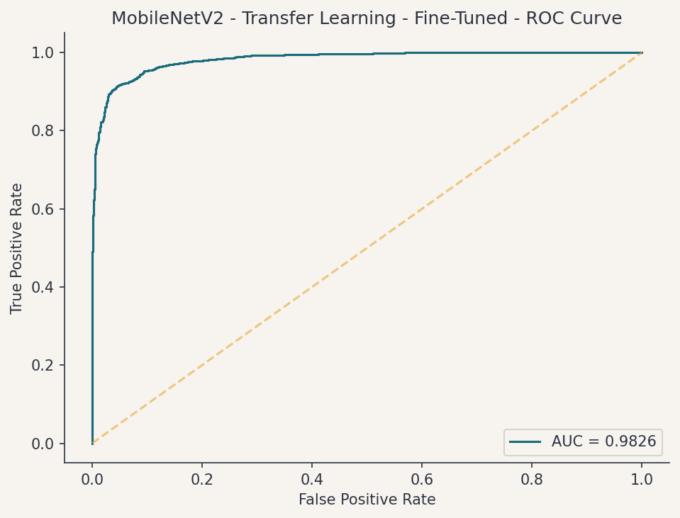
| Category | Item | Low | High |
|---|---|---|---|
| Hardware | Laptop per site (2), if not already owned $300-$500 each; most partner labs may already have suitable hardware |
$0 | $1,000 |
| Camera mount / USB microscope adapter per site (2) | $600 | $2,000 | |
| Personnel | Pilot coordinator (0.5 FTE, 6 months) Manages logistics, data collection, and lab liaison. The single largest cost. |
$9,000 | $15,000 |
| Lab technician training (per site, per person) 2-day onboarding for 2 technicians at each site (4 total) |
$1,600 | $3,200 | |
| Technical support / data review (partial, remote) Monthly check-ins, model monitoring, anomaly review |
$3,000 | $5,000 | |
| Travel & Expenses | Site visits for setup and mid-pilot review (2 trips) Flights, accommodation, per diem for coordinator |
$6,000 | $10,000 |
| Lab supplies (consumables for parallel-run slides) | $800 | $1,500 | |
| Ethics / Regulatory | IRB / ethics submission and local regulatory filing Highly variable by jurisdiction; zero if existing ethics framework already covers AI-assist studies |
$0 | $5,000 |
| Total (incremental estimate) | $21K | $42.7K | |